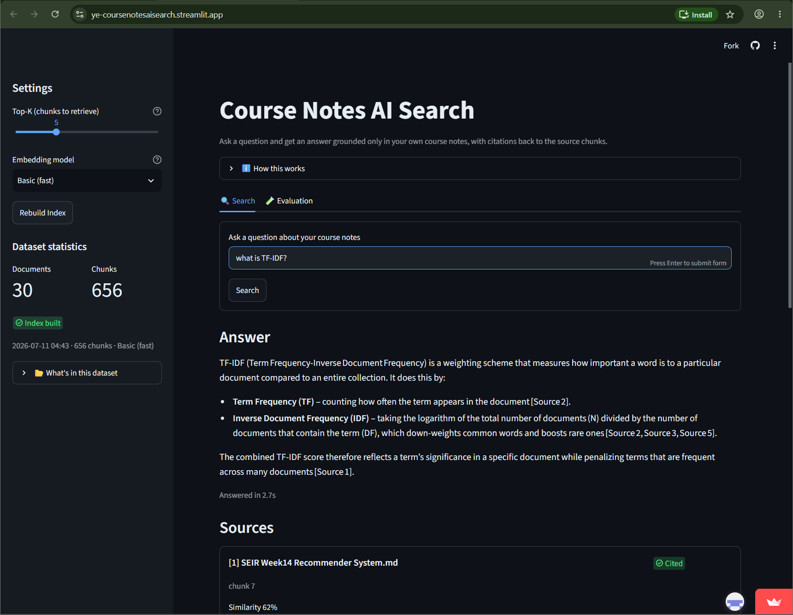

Ingest & Chunk
ingestion/loader.py and ingestion/chunker.py find every .md file in your notes folder. They split each file by its real headings first, then break the text into smaller overlapping chunks so nothing gets cut off awkwardly.
This is a search tool that answers questions using only your own course notes, never the AI's general knowledge. It also shows exactly which notes, and which part of your notes, each answer came from.
Course notes pile up fast. Searching through them by hand takes forever, and asking a normal chatbot isn't much better, since it can make things up that sound convincing but aren't actually in your notes. This project answers your questions using only text pulled from your own notes, and it shows you exactly which part of which note each answer came from. If it can't find anything relevant, it says so instead of guessing.
Every answer comes from your notes, not the AI's own knowledge. If your notes don't cover a question, it tells you instead of guessing.
You can check where every answer comes from. It points to the exact file and section, not just a vague "based on your notes."
There's no database and no Docker involved. Everything is stored in plain files, so the whole app can run on a free hosting plan.
Here's how a note file turns into an answer on screen. Each step depends on the one before it, so they always run in this order.
ingestion/loader.py and ingestion/chunker.py find every .md file in your notes folder. They split each file by its real headings first, then break the text into smaller overlapping chunks so nothing gets cut off awkwardly.
embeddings/encoder.py turns each chunk of text into a vector (a list of numbers) using a sentence-transformers model. This is what lets the app compare meaning, not just matching words.
vectorstore/store.py saves those vectors in a FAISS index, plus two small JSON files that keep track of the chunk details and when the index was last built. No database needed.
retrieval/search.py searches for the closest matching chunks to your question. If your question actually has two parts, it splits them and searches separately, then combines the results.
generation/prompt.py and generation/client.py send the matched notes to an LLM (hosted by NVIDIA) and ask it to answer using only that text, with citations. The prompt also tells it to ignore any instructions hidden inside a question.
app.py is the Streamlit page you actually see: a search box, the answer, cards showing each source with a citation badge, some settings, and a tab for running test questions.
Four decisions I made along the way, and why I made them, not just what the code does.
FAISS only stores the vectors themselves, not the actual text or filenames. So this project saves that extra information as plain JSON files next to the index instead of using a database. I actually started with Postgres and Docker, but switched to this simpler setup so the app could run on a free hosting plan without needing anything extra installed.
If you ask something like "What is AI? And what is BM-25?", the app used to lean toward one topic and miss the other completely. I found this while testing: that exact question returned zero results about BM-25. Now the app splits questions on the question mark, searches each part on its own, and combines the results. Normal single questions, even ones with the word "and" in them, aren't affected.
One of the course topics is actually about breaking chatbots like this one, so I treated it as a real risk, not just a theory. The system prompt treats whatever the user types as text to answer, not as new instructions. I tested it with a few tricks, like telling it to ignore its rules or reveal its system prompt, and it refused all of them. It even handled a mixed case where half the question was real and the other half was trying to trick it, answering the real part and ignoring the rest.
The AI model doesn't always format citations the same way. Sometimes it writes [Source 1] normally, sometimes it uses different brackets like 【Source 1】, and sometimes there's a strange invisible character in the spacing. I noticed this while testing the same question multiple times, so I updated the code that reads citations to accept all these variations.
You can try the app right now in your browser. No installation needed.

I ran 9 fixed test questions through the same search-and-answer pipeline used in
the Search tab. This was tested against the live dataset: 30 files and 656
chunks, using the all-MiniLM-L6-v2 model.
| # | Question | Top similarity | Result |
|---|---|---|---|
| 1 | What is PageRank and how does it work? | 0.835 | correct Grounded answer with inline citations. |
| 2 | What is Retrieval-Augmented Generation (RAG)? | 0.557 | correct Grounded, cites the RAG Architecture notes. |
| 3 | How do you evaluate an information retrieval system? | 0.587 | correct Grounded in the IR Evaluation notes. |
| 4 | What is a vector database and how is it used in Neural IR? | 0.626 | correct Grounded in the Neural IR notes. |
| 5 | Explain content-based filtering in recommender systems. | 0.609 | correct Grounded in the Recommender Systems notes. |
| 6 | What are the key stages of web crawling? | 0.636 | correct Grounded in the Web Crawling notes. |
| 7 | What ethical issues arise in information retrieval systems? | 0.539 | correct Grounded in the Ethics in AI notes. |
| 8 | What is the capital of France? (deliberately off-topic) | 0.274 | correctly refused Caught by the grounding rule, not just because retrieval came back empty. |
| 9 | What is AI? And what is BM-25? (compound, two topics) | 0.796 / 0.541 | correct Both halves answered and cited correctly. This is the test case for the two-part question fix above. |
Questions related to the notes scored between 0.54 and 0.84 for their best match. The question that was meant to be off-topic only scored 0.27. That's a clear gap, which means the similarity score is a good signal for whether the notes actually cover a question. This held up even after I grew the dataset partway through the project, from 14 files to 30 files (245 to 656 chunks) across two different courses.